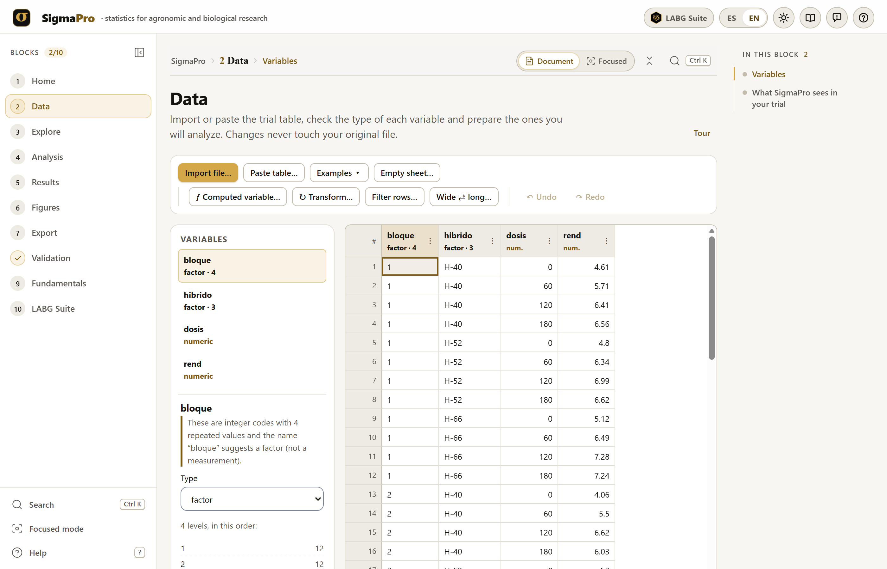
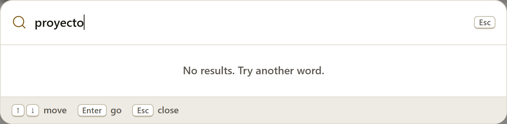
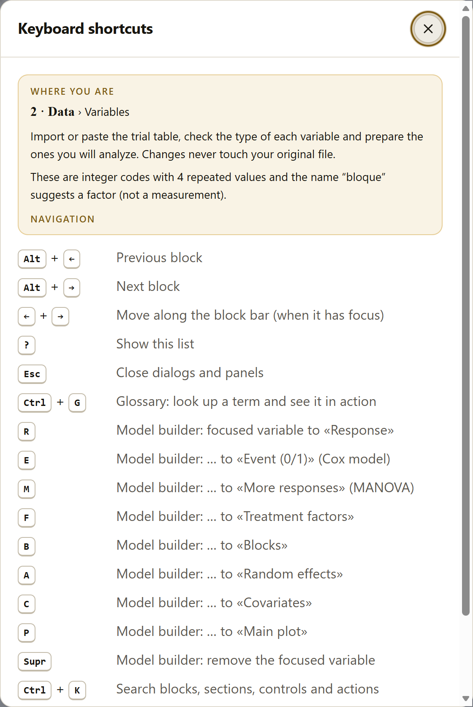
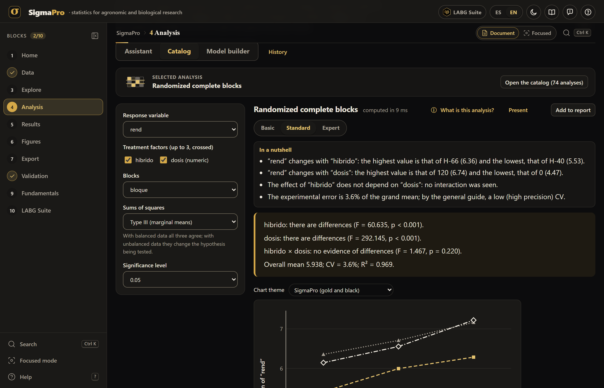
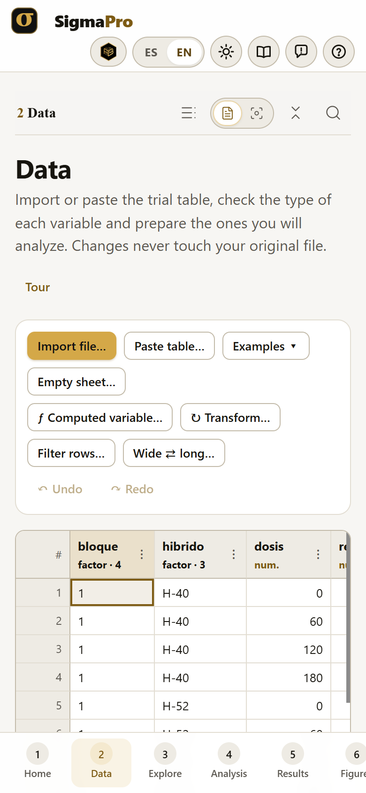
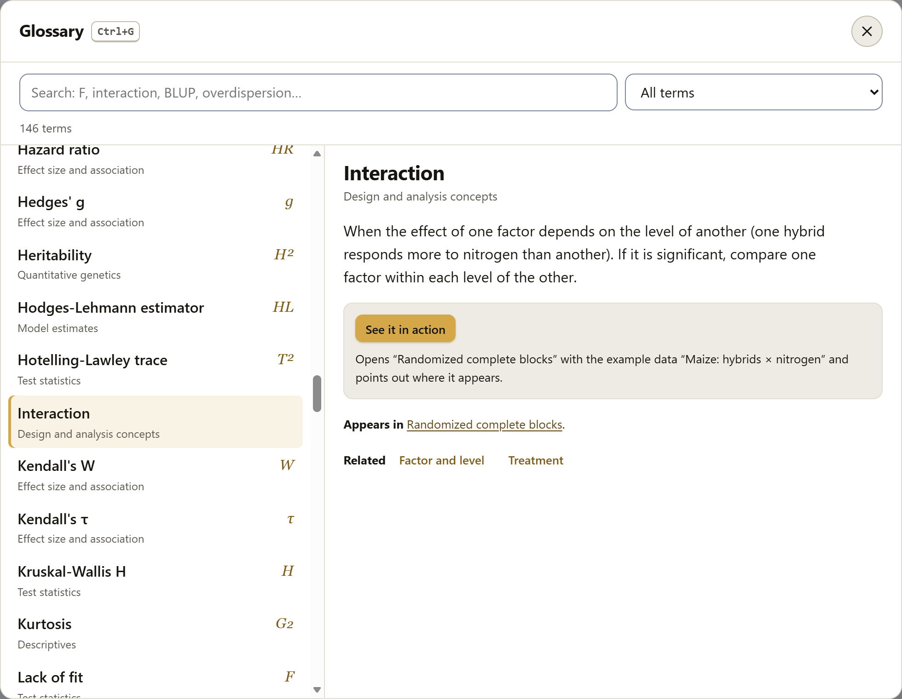
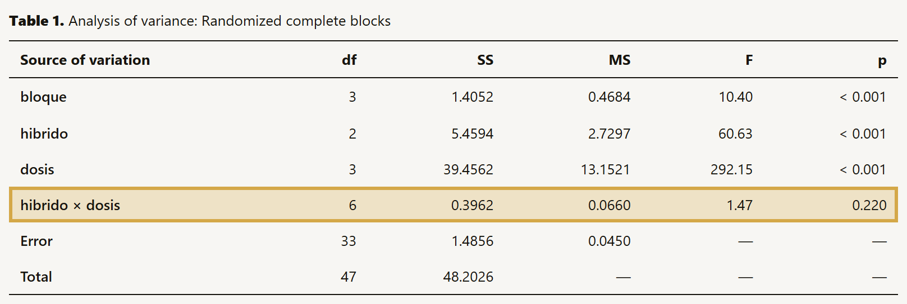
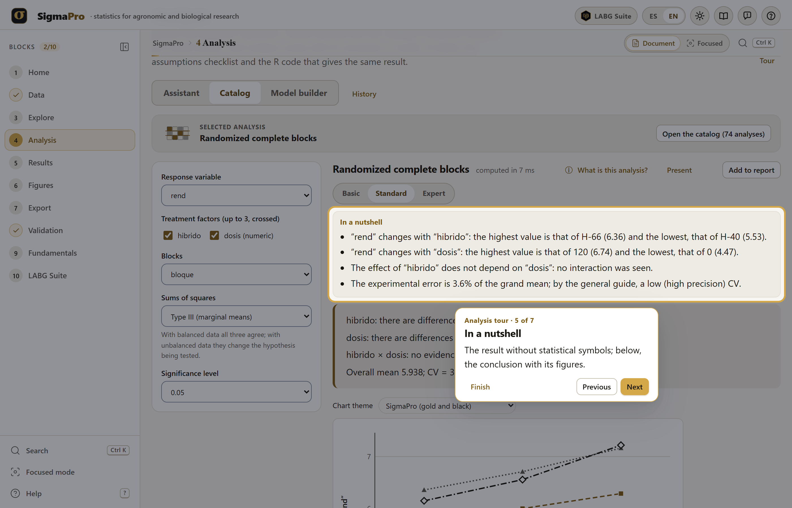
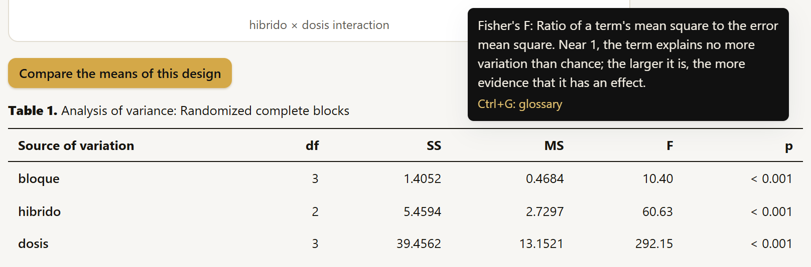

The methods paragraph that the report builds (section 5.4) cites the program with the version you have open, together with R, and the reference list of the exported report includes the reference of each method you used.
SigmaPro runs entirely inside your browser. The data you open, the analyses and the reports are computed on your computer and are never sent to any server, not even for the models that run in the R engine, which also works inside the browser. You can analyze the unpublished data of a thesis or a trial without them ever leaving your machine.
The screenshots, figures and numbers in this manual come from the program itself, with the 27 example trials it includes: six are published data, cited where they are used; the rest are fictitious, built so that each analysis has a clear case, and must not be cited as data.
The manual follows the order of the app: ten numbered blocks, walked from top to bottom in the sidebar. Each chapter explains one block and carries its number: chapter 4 is Block 4, and its sections, figures and tables are numbered 4.1, 4.2… The introduction, before the blocks, is numbered I.1, I.2…
The color of a block appears on the opening page of its chapter, in the number of each section, on the tab at the edge of the page and in the table of contents.
| Block | Name in the app | What it does |
|---|---|---|
| 1 | Home | The front page: what the app is for, the path of an analysis, the list of what you can analyze, how to cite it, the opening screen and the notice for recovering saved work |
| 2 | Data | Importing, pasting or opening an example; the worksheet, the variable types, computed variables, transformations, filters, wide ⇄ long and what SigmaPro sees in the trial |
| 3 | Explore | Descriptive statistics, frequencies, proportions and goodness of fit, with their intervals |
| 4 | Analysis | The assistant, the catalog and the model builder; its 74 analyses (the other 4 are in Explore), from experimental designs and mean comparisons to mixed models, generalized models and the rest of the families |
| 5 | Results | The LABG Report: the saved analyses, with their tables, figures and assumptions, the paragraph for the thesis and the R code |
| 6 | Figures | The report figures, their themes, their downloads, the ✎ editor and the Figure Studio |
| 7 | Export | The report in .docx, PDF or HTML, the tables, the figures, the .labg project and autosave |
| 8 | Validation | The comparison of each result against R, case by case |
| 9 | Fundamentals | One fact sheet per analysis: what it is for, the model, the assumptions, the data it needs, how to read it and its references, with example data and templates |
| 10 | LABG Suite | The sister apps that continue the work, the suggestions within the analysis and how to take the data from one app to another |
Clarifications and practical tips that save time.
What can change your conclusions if it is overlooked.
The idea behind a calculation, without unnecessary formulas.
A text or a result exactly as the app produces it.
| Written like this | Meaning |
|---|---|
| Add to report | A button, check box, field or menu of the app, with its text exactly as it appears on screen. |
rend, hibrido * dosis + (1 | bloque) | A column name, a formula or a value that you type exactly as shown. |
| “rend”, “Germinó” | The names of the variables and of their levels, in quotation marks, as the app writes them in its conclusions. The example datasets keep their original Spanish column and level names (for example, “rend” is yield). |
| 5.938 · F = 60.63 · p < 0.001 | Numbers with a decimal point, as in the app; the letters of the statistics, in italics. |
| Figure 4.28 · Table 4.3 | The figures and tables of the manual. The tables that the app numbers within a result (“Table 1. Analysis of covariance”) are referred to by their title. |
All the numbers in the text are the ones the app gives with its examples (Data block → Examples ▾) and the default values, unless stated otherwise. The main example is “Maize: hybrids × nitrogen”, a factorial of 3 hybrids by 4 nitrogen rates in 4 blocks; when a chapter uses another example, it names it before giving its results. With the same example you will see the same numbers.
What the program is, which questions about a trial it answers, what data it accepts and what it delivers, how to open it and work through it, which language it works in and what it does not do yet.
SigmaPro is a statistics program for agronomic and biological research that runs inside the browser, with nothing to install and no internet connection. It takes the data of a trial along a single path, from the field file to the published table and figure.
That path is the path of the blocks: load the data, explore them, choose the analysis that matches the design, read the conclusion, check the assumptions and export the report. It is made for people who analyze their own experiments—undergraduate and graduate students, teachers, field and greenhouse researchers—and want correct results without writing code. That is why each result begins with a conclusion in words, checks its assumptions, cites its methods and gives the R code that repeats the calculation. Its 78 analyses, in 18 families, range from the analysis of variance of an experimental design to mixed models, heritability, multi-environment trials, survival and time series. Each one has its Fundamentals fact sheet, which explains what it does, what it assumes, what data it needs and how to read it (chapter 9).
And every number is checked against R: the program’s computing core is its own, but R is the judge. The comparison, case by case, comes inside the app (chapter 8). SigmaPro is part of the LABG Suite, a set of free apps that also run in the browser; chapter 10 explains which of them continue the work of an analysis.
| The question | Where |
|---|---|
| What are my data like? Are there odd values, missing values, groups with few observations? | Explore (chapter 3) and what SigmaPro sees in the trial (section 2.13) |
| Do my treatments differ? Which ones? | Experimental designs and mean comparisons (sections 4.10 and 4.11) |
| Are the assumptions of the analysis met? If not, what do I do? | The traffic light of each result and the model assumptions (section 4.7) |
| What is the optimum rate? How does the crop respond to a quantitative factor? | Polynomials, regression, nonlinear models and response surfaces (sections 4.11, 4.12, 4.18 and 4.19) |
| How closely are two variables related? Which variables explain yield? | Correlation and multiple regression (sections 4.12 and 4.13) |
| Are the blocks, locations or years random? How do I analyze missing plots or repeated measures? | Linear mixed models (section 4.15) |
| How much of the variation is genetic? Which genotypes should I select? | Heritability, BLUP and multi-environment trials (sections 4.16 and 4.20) |
| How do I analyze counts, proportions or times to an event? | Generalized models and survival (sections 4.17 and 4.23) |
| How many replications or how many plants do I need? | Power, replications and sampling (section 4.22) |
| How do I present it in the thesis or in the paper? | The report, the figures and the exports (chapters 5 to 7) |
| What does an analysis do, what does it assume and how must my data be arranged to use it? | Its fact sheet in Fundamentals (chapter 9) |
| Which other tool continues the work: randomizing the design, exploring many variables, forming groups? | LABG Suite (chapter 10) |
The analysis of an experiment depends on how it was carried out: whether there were blocks, whether a factor was applied to large plots, whether the measurements were repeated on the same plant. SigmaPro reads the structure of the trial from the data (section 2.13), and the assistant asks about what cannot be read, so that it proposes the analysis that matches the design, not the best-known one.
Each result begins by saying what it found (“hibrido: there are differences (F = 60.635, p < 0.001)”) and then gives the tables. The numbers are there for anyone who wants to check them; the conclusion is there so that nobody misreads them.
The analyses check their own assumptions: most of them show the check with a traffic light in the result, and the experimental designs check them with Check the model assumptions (section 4.7). If something fails, the app says what to do: transform, change the test or use a model that does not make that assumption.
A method does not appear in the app until all its validation cases agree with R to six digits (chapter 8).
Each result comes with its R code, the report cites the methods with their versions, and the .labg project saves the data and the analyses with their fingerprints, so that another person arrives at the same numbers.
SigmaPro reads tables in delimited text (CSV, TSV), spreadsheet workbooks (.xlsx, .ods) and pasted tables, with one row per experimental unit and one column per variable (section 2.2). It recognizes factors, numeric variables, dates and identifiers, and lets you correct any of them. It works comfortably with about 100,000 rows.
It delivers the complete report in .docx, PDF or HTML; each table in CSV, and all of them together in a spreadsheet or in LaTeX; the figures in SVG, vector PDF, PNG or TIFF at 600 dpi; and the .labg project with the data, the analyses and the R code. In addition, each Fundamentals fact sheet gives a template in CSV or XLSX for preparing your data (section 9.5). Appendix A describes each file in detail.
index.html file, from the program folder, or from its web page. The first time the web page is opened, the browser stores the app so that it can be used offline afterward.When you open SigmaPro, its opening screen appears: on a black background, the logo and the name are drawn in about six seconds, and the scene stays still until you press Start (or Enter). Skip or Esc dismisses it at any time.
The ES · EN selector on the top bar changes the language of the whole app: the menus, the conclusions, the tables, the report, the methods paragraph and the Fundamentals fact sheets. When you change it, the app saves the work and reloads in the other language, with the same data and the same analyses; the chosen language is remembered the next time. The comments in the equivalent R code stay in Spanish. This manual describes the English interface.

123456789101112131415The block bar takes you to any block at any time; a block that needs something that does not exist yet (data, an analysis in the report) says so and offers the button to go and get it. Alt + ← and → move to the previous or the next block.


The sun button switches to the dark theme, more comfortable at night or on a projector; figures are always downloaded with the colors of the light theme (and with the chart theme you choose, chapter 6). On a narrow screen (a phone, a tablet held upright), the block bar moves to the bottom of the screen, as a row of tabs that slides sideways, and the buttons of the top bar drop to a second line.


The book button, or Ctrl G from any block, opens the glossary: 146 terms, namely the 121 statistics that appear in the app’s tables (F, p, R², CV, BLUP…) and 25 concepts of design and analysis (block, interaction, error stratum, REML, overdispersion…). Ctrl G again, or Esc, closes it.


The example data take the place of the loaded table, which is not lost: Back to the previous table, in Data, brings it back (section 2.12). At the Basic level, which hides the tables, “See it in action” switches to Standard (section 4.5).
Each block has the Tour button next to its title: it takes you step by step through the parts of the block, highlighting each one (the rest of the screen is dimmed) with two lines that say what it is for (figure I.8). Previous and Next, or the ← and → arrows, change the step; Finish or Esc closes the tour. In Home, First time? SigmaPro tour takes you around the app: the paths, the block bar, the search, the glossary, the shortcuts and the language. The tours of Data, Explore and Analysis offer to load the maize example if there are no data.

Tooltips appear when you rest the pointer on a control for a moment, or when you reach it with the keyboard, and they close with Esc. The table headers say what their statistic is (figure I.9), and the fields for the significance level, the sums of squares and the p-value adjustment carry their definition from the glossary.

Almost all of SigmaPro runs on its own computing core, written for the program. Some methods—linear mixed models, repeated measures and generalized linear mixed models—need algorithms that R handles better than anything else, and for them SigmaPro includes an R engine: R compiled to run inside the browser (webR), with the packages lme4, lmerTest, emmeans, nlme and car.
motor-r/ folder and opened from a server, the engine is loaded from that same folder, and no internet is needed, not even the first time.Section 4.6 explains the notice and which methods use the engine.
The order of the blocks is the order in which a trial is analyzed. You do not have to go through all of them: whatever a block needs from another, it takes on its own.
At any step, the ⓘ What is this analysis? button opens the analysis’s fact sheet in Fundamentals (Block 9), with what it assumes and the data it needs, and at the foot of some results the Continue in the LABG suite strip suggests the app that continues the work (Block 10).
The Data block includes 27 example trials (table 2.2), one or more for each family of analyses, embedded in the program so that they work with a double-click. Six are published data—Mendel’s segregation, the poisons of Box and Cox (1964), the oats in split plots of Yates (1935), an alpha-lattice and an oat trial in 14 environments from Olivoto and Lúcio (2020), and the elongation of a yarn made from three polymers, from Cornell (2002)—and the rest are fictitious, built so that each analysis has a clear case. The main example of the manual is “Maize: hybrids × nitrogen”: 3 hybrids with 4 nitrogen rates in 4 randomized complete blocks, 48 plots.
SigmaPro does what it does well, and it says what it does not do yet. These are its known limits.